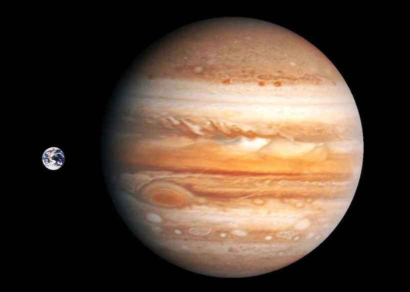
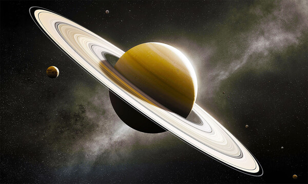
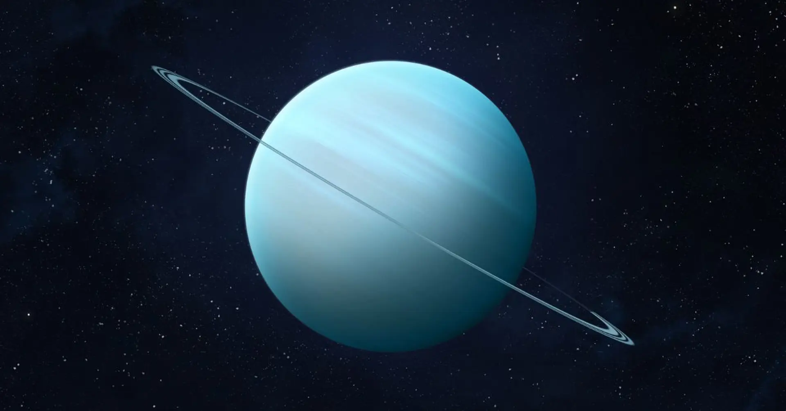
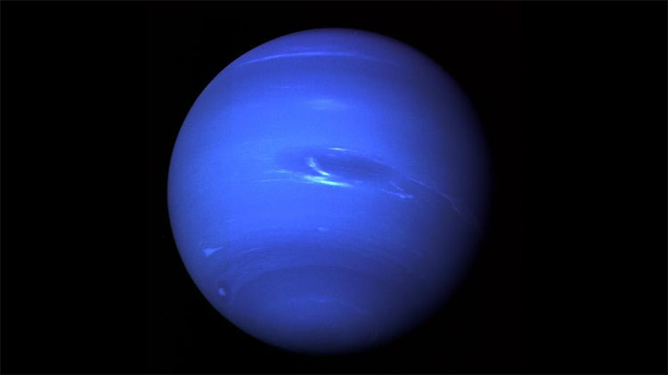

KHÁM PHÁ HỆ MẶT TRỜI
Bốn hành tinh khí khổng lồ là những thế giới lớn nhất trong Hệ Mặt Trời. Chúng nổi bật với kích thước khổng lồ, bầu khí quyển dày đặc, hệ vành đai tuyệt đẹp cùng hàng trăm vệ tinh tự nhiên.
Khám phá ngay →GIỚI THIỆU
Hành tinh khí khổng lồ là những hành tinh có kích thước rất lớn, thành phần chủ yếu gồm Hydro và Heli. Chúng không có bề mặt rắn như Trái Đất mà được bao phủ bởi lớp khí dày cùng hệ thống vành đai và nhiều vệ tinh tự nhiên.
Lớn gấp hàng chục lần Trái Đất.
Chủ yếu là Hydro và Heli.
Sao Thổ và Sao Mộc nổi tiếng với hệ vành đai.
Tổng cộng hơn 400 vệ tinh đã được phát hiện.
Hành tinh lớn nhất trong Hệ Mặt Trời
Sao Mộc là hành tinh lớn nhất trong Hệ Mặt Trời với khối lượng gấp khoảng 318 lần Trái Đất. Hành tinh này nổi tiếng với Vết Đỏ Lớn – một cơn bão khổng lồ tồn tại suốt hàng trăm năm.
139.820 km
95+
9 giờ 56 phút
-145°C
Hành tinh có hệ vành đai đẹp nhất
Sao Thổ nổi tiếng với hệ thống vành đai khổng lồ được cấu tạo từ hàng tỷ mảnh băng và đá nhỏ. Đây cũng là hành tinh có mật độ thấp nhất trong Hệ Mặt Trời.
116.460 km
146+
10,7 giờ
-178°C
Hành tinh quay nghiêng gần 98°
Sao Thiên Vương có màu xanh nhạt đặc trưng do khí Metan hấp thụ ánh sáng đỏ. Trục quay gần như nằm ngang khiến nó có chuyển động rất khác so với các hành tinh còn lại.
50.724 km
27
17 giờ
-224°C
Hành tinh xa Mặt Trời nhất
Sao Hải Vương nổi tiếng với những cơn gió có tốc độ hơn 2.000 km/h, mạnh nhất trong Hệ Mặt Trời. Một năm trên hành tinh này kéo dài khoảng 165 năm Trái Đất.
49.244 km
14
16 giờ
-214°C
KHÁM PHÁ
Galileo Galilei quan sát bốn vệ tinh lớn đầu tiên của Sao Mộc.
Những quan sát đầu tiên mở đường cho việc nghiên cứu hệ vành đai.
William Herschel phát hiện Sao Thiên Vương bằng kính thiên văn.
Được phát hiện nhờ các tính toán toán học trước khi quan sát trực tiếp.
SO SÁNH
| Hành tinh | Đường kính | Số vệ tinh | Nhiệt độ | Chu kỳ quay |
|---|---|---|---|---|
| Sao Mộc | 139.820 km | 95+ | -145°C | 9 giờ 56 phút |
| Sao Thổ | 116.460 km | 146+ | -178°C | 10,7 giờ |
| Sao Thiên Vương | 50.724 km | 27 | -224°C | 17 giờ |
| Sao Hải Vương | 49.244 km | 14 | -214°C | 16 giờ |
Fun Facts
Cơn bão trên Sao Mộc đã tồn tại hơn 300 năm và vẫn đang tiếp tục hoạt động.
Hệ vành đai của Sao Thổ trải dài hàng trăm nghìn kilomet nhưng lại rất mỏng.
Sao Thiên Vương gần như nằm ngang khi quay quanh Mặt Trời.
Trên Sao Hải Vương có những cơn gió đạt hơn 2.000 km/h.
Thư viện

Hành tinh lớn nhất Hệ Mặt Trời.

Nổi tiếng with hệ vành đai tuyệt đẹp.

Hành tinh có màu xanh nhạt đặc trưng.

Nơi có những cơn gió mạnh nhất Hệ Mặt Trời.
Mỗi hành tinh đều ẩn chứa những điều kỳ diệu đang chờ con người khám phá. Hành trình tìm hiểu Hệ Mặt Trời chỉ mới bắt đầu.